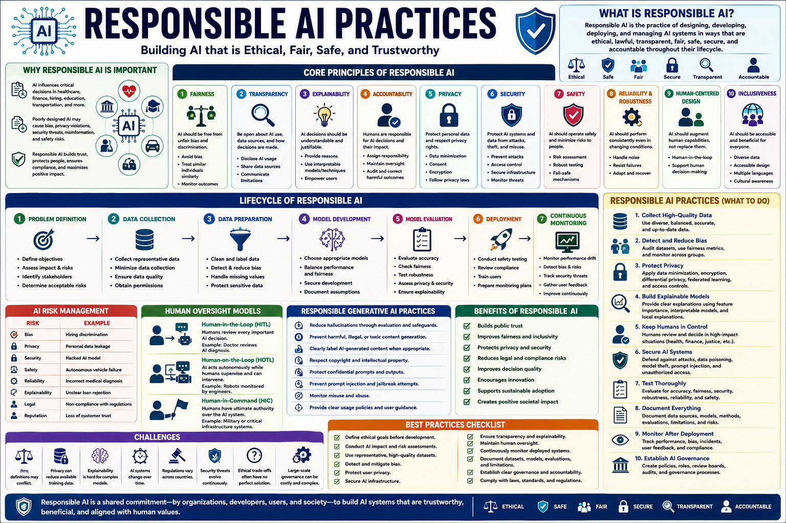

Importance of a Responsible AI
Responsible AI is not a feature — it's the foundation for sustainable, trusted, and compliant AI deployment. This guide examines the 10 pillars of responsible AI: governance, principles, risk management, organizational accountability, transparency, human-centered design, continuous monitoring, regulatory alignment, stakeholder engagement, and culture — with actionable frameworks and CGAI exam-focused practice questions.

Ethics Board + PoliciesFairness + TransparencyAudit + MonitorSustainable AI Adoption📊 The responsible AI lifecycle: governance drives development, deployment, and lasting trust
Establish an AI ethics board, clear decision-making hierarchy, escalation paths, and accountability chains. Governance is the backbone of responsible AI.
Codify core principles: fairness, transparency, accountability, privacy, safety, inclusiveness. Google, Microsoft, and the EU all publish AI principles.
Classify AI systems by risk level. High-risk applications (healthcare, hiring, lending) require enhanced scrutiny, documentation, and human oversight.
Clear ownership of AI outcomes. Every model must have a named responsible individual or team. No orphaned models in production.
Build explainability into the system from day one. Users and regulators need to understand how decisions are made. Use model cards, fact sheets, and explanations.
Design AI systems around human needs, not just technical capabilities. Include affected communities in design, testing, and feedback loops.
AI behavior drifts over time. Implement automated monitoring for accuracy, fairness, safety, and data drift. Act on feedback before harm occurs.
Proactively align with current and emerging regulations: EU AI Act, GDPR, NYC 144, Colorado AI Act, and upcoming legislation worldwide.
Involve diverse stakeholders: engineers, ethicists, legal, domain experts, affected communities, and end-users. No single perspective catches all risks.
Responsible AI requires cultural change, not just technical fixes. Train every team member on ethics. Reward raising concerns. Normalize saying "we shouldn't build this."
Major frameworks provide structured approaches to implementing responsible AI at organizational scale.
Practical steps to embed responsible AI into the development lifecycle.
Conduct an impact assessment before any AI project begins. Evaluate societal, ethical, and human rights implications.
Integrate an ethics review checkpoint into the development pipeline. Models cannot proceed to deployment without passing ethics review.
Maintain comprehensive documentation: training data provenance, model architecture decisions, fairness evaluation results, and known limitations.
Every team member — engineers, PMs, designers, executives — needs responsible AI training. Ethics is everyone's job, not just the ethics team's.
Strong governance turns principles into practice. These mechanisms ensure accountability at every level.
Cross-functional committee with authority to approve or block AI deployments. Includes engineering, legal, ethics, product, and external advisors.
Track responsible AI metrics alongside business metrics. Fairness gaps, transparency scores, and incident rates should be as visible as revenue.
Pre-established protocol for when AI causes harm. Includes rollback procedures, communication templates, regulatory notification, and root cause analysis.
Regular third-party audits validate internal fairness assessments. External auditors bring objectivity and catch blind spots.
Automated governance checks integrated into the ML pipeline.
⬆️ Automated governance gate — blocks deployment if responsible AI requirements are not met.
| # | Pillar | Key Practice | Measure of Success |
|---|---|---|---|
| ① | Governance | Ethics board, clear ownership | 100% models have named owner |
| ② | Principles | Codified, operationalized principles | Principles translated to engineering requirements |
| ③ | Risk Management | Risk classification, enhanced scrutiny | All high-risk models pass conformity assessment |
| ④ | Accountability | Named owners, audit trails | No orphaned models in production |
| ⑤ | Transparency | Model cards, explainability | 100% model card coverage |
| ⑥ | Human-Centered | Stakeholder consultation, appeals | Appeal mechanism exists for all user-facing AI |
| ⑦ | Monitoring | Automated drift and fairness tracking | Alert triggered within 24h of threshold breach |
| ⑧ | Regulatory | Proactive compliance program | Zero regulatory findings or penalties |
| ⑨ | Stakeholders | Diverse review at every stage | External review for all high-risk models |
| ⑩ | Culture | Training, safe reporting, incentives | 100% ethics training, upward trend in concerns raised |
20 questions on governance, frameworks, risk management, and responsible AI principles.